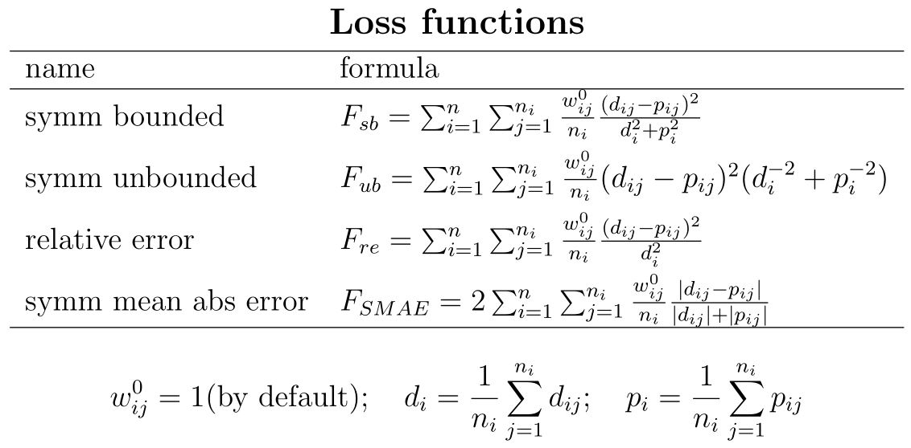

AmP parameter estimation

Introduction
This page describes the methodology that is used in the AmP project for the estimation of parameters of DEB models from data: the practice and getting started, technical aspects, i.e. code-specifications and how to use it to arrive at parameter estimates, evaluation of estimation results, accuracy of parameter estimates. An introduction to modelling and statistics is given in the document Basic methods for Theoretical Biology. The described procedure is coded in the DEBtool software (download from GitHub) and follows the DEB notation.Parameter estimation is the procedure to use data to arrive at parameter estimates by minimizing some loss function that quantifies the distance between data and model predictions, known as the estimation criterion. A loss function is a function of data, model predictions and weight coefficients, so the problem is to find the combination of parameter values that corresponds with the minimum, starting from one or more initial guesses. Several methods (algorithms) can be used for this, but the result should be independent of the algorithm. A complicating factor is that the loss function typically has several local minima rather than a single one, meaning that neighbouring parameter values have higher values of the loss function. One of the local minima is the global minimum, which is usually at the parameter estimate that we are looking for. But the difference between the global and local minima might be small, and a local minimum might be at parameter values that have a much better eco-physiological interpretation. Typical for parameter estimation in an AmP context is that we not have a single data set, but several to many, which are all used simultaneously to estimate all parameters in a single estimation step; the predictions for e.g. respiration and reproduction share particular parameters and must, therefore, be considered simulataneously. This feature poses strong constraints on the choice of loss function. Although it is satifying to arrive at a good fit, the interpretation of parameter values is at least as important. This inspired us to develop the notion of parameter estimation-in-context.
Times and rates depend on (body) temperature and temperatures can differ between data sets. For this reason, and for comparison, all parameters are estimated for the chosen reference temperature of 20 °C and need to be converted to the current temperature.
Typified DEB models
 A set of coherent and consistent assumptions defines models and models define parameters.
These parameters, in combination with the model structure, determine what data is required to estimate these parameters.
Different models of DEB theory have been applied to different organisms but all are related and consistent with the theory.
Some of the most used models have been formalized and are called typified models and all are simple extensions of the most simple one: the standard (std) model.
They are described on the page Typified_models.
The main distinction between the models is whether or not metabolic acceleration occurs during ontogeny,
see Kooijman 2014.
A set of coherent and consistent assumptions defines models and models define parameters.
These parameters, in combination with the model structure, determine what data is required to estimate these parameters.
Different models of DEB theory have been applied to different organisms but all are related and consistent with the theory.
Some of the most used models have been formalized and are called typified models and all are simple extensions of the most simple one: the standard (std) model.
They are described on the page Typified_models.
The main distinction between the models is whether or not metabolic acceleration occurs during ontogeny,
see Kooijman 2014.
Species-specific details that are not included in the computation of implied properties:
- Acanthocephalans live in the micro-aerobic environment of the gut of their host. They don't use dioxygen, but ferment. It is possible to model this (see Section 4.9.1, Kooijman 2010), but this is not yet implemented in the code behind the calculation of the statistics. These particular respiration predictions should, therefore, be ignored.
- Cephalopods are typically semelparous (death at first spawning) and die well before approaching ultimate body size. For practical purposes, this early death is included as an effect of ageing, but ageing has probably nothing to do with this. The asymptotic size is calculated in the pars-file and some of the listed properties are not realistic as a consequence.
- The toadlets Crinia lower their allocation fraction to soma between hatch and birth (Mueller et al 2012).
- Mammals take milk during their baby-stage, weaning is included in all stx models for mammals as a maturity threshold, but the change in diet is not taken into account.
- Many birds first reproduce in their second year under (seasonal) field conditions. They apparently have a relatively long juvenile period during most of which they are fully grown. This trait leads to high values for maturity maintenance at puberty and low values for maturity maintenance. Husbandry data indicates that birds potentially reproduce much earlier, which questions the realism of these two parameters.
Data and data types
Data can be classified as- dependent data, i.e. data that needs to be predicted, while these predictions depend on independent data and parameter values
- independent data, i.e. data that is considered as given, does not depend on parameter values, but modifies predictions for dependent data
A data set can be of several types:
- zero-variate data, i.e. dependent data in the form of a single number (scalar)
- uni-variate data, i.e. dependent data in the form of an n-vector of numbers
- bi-varate data, i.e. dependent data in the form of an (n,2)-matrix of numbers
- tri-variate data, i.e. dependent data in the form of a 3-dim array of numbers
- multi-variate data, i.e. dependent data in the form of an (n,m)-matrix of numbers
- pseudo-data, theoretical dependent scalar-valued data for a generalized animal that is added (with small weight coefficients) to avoid unrealistic parameter estimates
- auxiliary data, independent data of any type (which, therefore, do not need to be predicted, for instance temperature)
The data that is used to arrive at DEB parameter estimates consists of a collection of such data sets. Increasing the number of (real as opposed to pseudo) data sets, so increasing information, reduces the role of the pseudo-data in the parameter estimation. But if environmental conditions (feeding situation, temperature) differ between data sets in ways that are not taken into account properly, the accuracy of parameter estimates might or might not be increased by including more data.
Pseudo-data is a set of parameter values (or functions of them) corresponding to a generalized animal, but treated as independent data, i.e. typical values for a wide variety of animals (Lika et al 2011). These values may change as the AmP collection increases and can be ignored be setting the weight to zero. Pseudo-data serve to fill possible gaps in information that is contained in the real data. Only intensive parameters can play the role of pseudo-data points, i.e. parameters that are independent of body size. Species-specific parameters should not be included in the pseudo-data, especially the zoom factor, the shape coefficient and the maturity levels at birth and puberty. Since the value for specific cost for structure (E_G) is sensitive for the water content of tissue, which differs between jelly fish and vertebrates, it is replaced by the growth efficiency kap_G: energy fixed in new tissue as fraction that energy that was required for its synthesis. Pseudo-data, if used properly, can play several roles. It serves the task of increasing the identifiability of parameters and, thus, preventing the ambiguous determination of parameter values. It can also improve the eco-physiological interpretation.
The difference between independent data and parameters can be subtle, as illustrated by the chemical parameters: chemical potentials and coefficients, specific densities. All entries have such parameters (which are typically kept fixed at default values), but most do not use them. If respiration data must be predicted, for instance, while DEB theory uses the conservation laws for chemical elements for these predictions, these parameters are used. Although all chemical elements can be used in DEB theory, only C, H, O and N are used for simplicity's sake. The composition of N-waste and the specific densities (roughly the dry-wet weight ratio's) are taxon-specific. These parameters are set at default values, but can be oberwritten by the user, and can also be estimated (from data), which is why we call them parameters, rather than independent data.
The difference between dependent and independent data depends on the context of the research and of data availability. Food intake is rarely known, for instance, and the value of the maximum weight (as zero-variate data) is frequently inconsistent with uni-variate time-weight data. Correct or not, the hypothesis is that food intake (and/or quality) differed, and the data is made consistent by considering the (constant) scaled functional response as dependent data (or parameter, if you wish), while, if known, it would have been independent data. The feeding or temperature trajectory during ontogeny, for instance, is typically treated as independent data, but if the research problem includes the reconstruction of such trajectories, is becomes dependent data, where the species parameters can be treated as given, or estimated simultaneously as well. See, for instance, the entries for the emperor penguin or the Manx shearwater, but many examples exist.
The real (as opposed to pseudo) data should at least contain the maximum adult weight. However, it is preferable to also include weight and age at birth and puberty as well as the maximum reproduction rate. Notice that times and rates without temperature are meaningless. This combination already fixes the growth curve in a crude way, specifies allocation fraction kappa and the maturity thresholds at birth and puberty. The weight can be dry, ash-free dry or wet weight, the conversion involves specific densities, which belong to the chemical parameters. Assuming that the specific density of wet mass is close to 1 g/cm3, the values for d_V and d_E equal dry/wet weight ratios.
Data quality and availability
The quality and availability of data varies enormously over species, which has consequences for the entries. Data of most entries were taken from the literature, and collected by workers with widely different prior knowledge. This situation is far from ideal and we hope that future data acquisition is done with the DEB context in mind.Data from field conditions suffer from the problem that temperature and feeding trajectories are generally unknown. To a lesser extent, this also applies to laboratory conditions. Only a few species can be cultured successfully and detailed (chemical) knowledge about nutritional requirements hardly exists for any species. The idea that `some prediction is better than no prediction' fueled the collection (e.g. for management purposes), but where data is guessed is clearly indicated in the mydata-files. The hope is that such weak entries will improve over time by supplementing data and re-estimate parameters. Predictions might help to prioritize further research.
Another motivation to include weak entries is that predictions for situations that have not yet been studied empirically can be used to test the theory rigorously. It is encouraging to see how few data already allows for an estimation of parameters. That results are not fully random is supported by the observation that similar species (in terms of body size, habitat and taxonomy) have similar parameter values, despite lack of advanced data. See, for instance, the different species of tardigrades. The reliability of the resulting estimates and predictions should always be evaluated in the context of the data on which they are based. Generally, the more types of data, the more reliable are the results.
Where many different data sources are used, however, conditions can vary to the extent that variations cannot be ignored. In some mydata-files this is taken into account by assigning different feeding conditions to different data sets. The scaled functional reponse is the food intake as fraction of the maximum possible one for an individual of that size; this food intake flux is multiplied by the digestion efficiency to arrive at the assimilation flux. The scaled functional response only takes differences in food density into account, not differences in food quality. If food qualities differ, the scaled function response is no longer less or equal to 1, but might be larger. If feeding densities and qualities are not specified with the data, this "repair" is far from ideal, however.
The variation not only concerns environmental conditions, but also differences in parameter values among individuals that have been used. Parameter values tend to vary across the geographical range of a species, a problem that applies to many fish entries. Although parameter values are better fixed with a growing number of data types, the inherent variability works in the opposite direction. This is why marks have been given for both completeness of data and goodness of fit.
Generally the use of statistics derived from observations, such as the von Bertalanffy growth rate or the half saturation coefficient, as data from which DEB parameters are estimated, is discouraged. It is far better to base the parameter estimation directly on the measurements, avoiding manipulation or interpretation. For instance, if wet weights were measured, use wet weights as data and do not convert them first to dry weights (or vice versa).
Although DEB theory concerns all organisms, the AmP collection is only about animals, for the reason that they can live off a single (chemically complex) resource and thus can be modeled with a single reserve and resource availability is relatively simple to characterize. Within the animals, we made an effort to maximize coverage, given limitations imposed by data availability.
Data completeness
For comparative purposes, it helps to judge the completeness of the data using a marking system from 1 (low) to 10 (high)
(See Table).
Weight coefficients
The weight coefficients serve to (subjectively) quantify the confidence of the user in the data-sets as well as for specific data points. The AmP procedure distinguishes between real and pseudo data. The weight coefficients are automatically set in the mydata-file, weighing each data-set equally, but are 10 times as small for spseudo-data. So a large uni-variate data set has (by default) the same weight as a zero-variate data-point. If the resulting fit is very good, changes in weight coefficients hardly have an effect; if the fit is not very good, however, such changes can have big effects.
The user can overwrite default weight values (for either the whole data set or else particular values) in the mydata-file.
The overwriting of the weight coefficient is done by multiplying the default value by a dimensionless factor.
You can exclude a whole data set, e.g. LW, from the estimation by multipling the weights with zero, weights.LW = 0 * weights.LW.
You can exclude the last, say 10, data points in this data set, by
weights.LW(end-10:end) = 0; weights.tL = weights.tL * length(weights.tL)/nnz(weights.tL);.
The second command restores the default that data set LW is given the same weight as other data sets.
Loss function
A loss function is a distance measure between data and predictions, so- the distance between (multi-dim) points A and B equals the distance between B and A
- if A equals B, the distance should be zero
- distances are non-negative
 The default loss function is the symmetric bounded one: sb. It is symmetric because it value is unaffected by interchanging data and predictions and bounded because, if predictions go to inifinite, their contribution to the loss function remains limited. The latter property is absent in the symmetric unbounded loss function su. The rationale is discussed in Marques et al 2019.
The default values for the weight-coefficients for the pseudo-data depend on the choice of loss function to ensure that they play a minor role in the estimation if data contains the required information.
Minimization of loss function
Estimation of some 15 parameters simultaneously from a variety of data sets cannot be routine work. You can only expect useful results if your initial estimates are not too far from the resulting estimates. It is best to either use a time-length-energy framework (as done here) or a time-length-mass framework in the selection of primary parameters and not mix them. Both frameworks can be used to predict energies and masses, using conversion factors.The minimum is found using a Nelder-Mead simplex method. A simplex is a set of parameter-combinations with a number of elements that is one more than the number of free parameters. One of the elements in the set is the specified initial parameter-combination, the seed, the others are generated automatically in its "neighbourhood", i.e. each parameter value is multiplied by a factor close to 1, one-by-one, which can be set in the estimation options. The simplex method tries to replace the worst parameter combination by one that is better than the best one, i.e. gives a smaller value of the loss-function. During the iteration, the parameters are (optionally, but by default) filtered to avoid that combinations of values are outside their logical domain (Marques et al 2018).
Many predictions, as specified in the predict file, are the results of numerical procedures, involving small numerical errors. For this reason, it is not always possible to arrive at a successful convergence, i.e. the lossfunction has a rough surface. As long as the resulting fit is good, and the parameter values seem acceptable, this does not need to be a problem. In many cases, convergence will be smooth and easy, but sometimes convergence is more reluctant.
It is not always easy to see in the result of an estimation-run that a particular free parameter does not occur in the predict-file
and the reported value is a result of a random walk, rather than of an estimation.
The command prt_elas([],1)
shows the first and second order elasticities of the lossfunction at the result.
Such parameters have elasticity zero.
The "1" means that an html-page with the elasticities is opened in your browser.
Parameter estimation in practice
To obtain the estimates, you have to prepare a script-file run_my_pet and three function files: mydata_my_pet,pars_init_my_pet and predict_my_pet
(where "my_pet" is replaced by the name of your entry).
This can be done by the AmP entry prepare system (AmPeps),
which writes these files on the basis of a graphical user interface (gui).
Always work from your own directory outside of the DEBtool folder.
Application in a course-context is given by AmPeps@DEB2023.
Just type AmPeps and have a look in the manual that will load in your browser; you need to be connected to the internet.
The AmPeps selects a related species in the AmP collection to copy the initial values of the parameters, from which the estimation starts.
The task of AmPeps is to produce a proposal for the 4 required source-files, which you can edit in the MatLab editor before use for estimation.
Alternatively, but more risky, download the files of a similar species in the AmP collection and modify them, not forgetting to edit all data.
One way to be sure of that, start by deleting all bibkeys in the mydata-file to reduce the risk that data remains in the file that does not relate to your species.
You can use get_id(my_pet,1) to get the id's of all sites that need to be specified in the "links" section of the mydata-file;
the "1" means that all these sites are opened in your browser, which might help to specify the
ecoCodes.
Some of the sites are general, other taxon-specific; the selection is automatized based on the taxonomic classification of my_pet
(which is done via the Catalog of Life in the background).
If your species is already in the collection, download the 4 files, add your name in the mydata-files as modification author,
and a discussion point that explains what changed and why.
The mydata-file has the line [data, units, label, weights] = addpseudodata(data, units, label, weights);.
This line adds pseudo-data to the data and (small) weight coefficients to the weights.
The weights can be overwritten and set to zero, for instance, if you want to avoid its use in the estimation.
The pars_init file has the line [par, units, label, free] = addchem(par, units, label, free, metaData.phylum, metaData.class);.
This line adds chemical parameters to the specified parameters and keeps them fixed by default.
The specific densities of dry mass (i.e. the dry/wet weight ratios if the specific density for wet weight equals 1 g/cm3) is set taxon-specifically in
get_d_V.
The composition of the nitrogen-waste is set taxon-specifically in get_N_waste.
The other chemical parameters are set in addchem,
but all these settings can be overwritten in the pars_init file.
The latter class of parameters rarely varies much across species.
Estimation options are set via DEBtool_M function estim_options in the run-file. Some options relate to details of the minimization algorithm, others to where to find initial values or what to output as result. The standard way to proceed is
- start by editing the run-file with
-
estim_options('default');, meaning select all defaults -
estim_options('max_step_number', 5e2);meaning that the algorithm stops after 500 steps (which will probably not enough to reach convergence, but see below) -
estim_options('pars_init_method', 2);, meaning select initial parameter values from the pars_init-file -
estim_options('results_output', 3);, meaning write results_my_pet.mat, save figures, write html-file of results -
estim_options('method', 'nm');, meaning use the Nead Melder method to minimize the lossfunction
printmat('my_pet'), but this is rarely necessary (see below). -
- then continue by selecting in the run-file
-
estim_options('pars_init_method', 1);, meaning select initial parameter values from the results_my_pet.mat-file
-
- finally run the function
mat2pars_initto copy the data from the results_my_pet.mat-file to the pars_init-file (no input required).
free.some_parameter = 0
in the pars_init_file) and later release them by setting free.some_parameter = 1.
Finding the global minimum of the loss function rapidly becomes more complex the more parameters are estimated simultanously.
The free-setting is always taken from the pars_init file (irrespective of the pars_init_method setting).
If particular predictions deviate too much from the data, you can increase the weight-coefficients of this data in the mydata-file by
multiplying the current weight coefficients for this data by a factor, say 3 to 10; avoid large values.
Realize that by making a data-set more important, the rest becomes less-important.
The algorithm uses model-specific filters for pameters values during iteration by default, to avoid that a parameter combination is physically impossible.
In addition to these filters, you can specify user-defined filters in the predict-file e.g. to constrain the range of a parameter,
like in if f<0; info=0; prdData=[]; return; end.
As soon as the algorithm tries a value f<0, it will reject this attempt and tries another value.
The options allow to switch-off filters, but it then becomes likely that the predict-file reports an error if the algorithm tries an illegal combination of parameters values.
DEBtool functions that involve a numerical procedure always have a flag as output that indicates success (1) or failure (0).
This flag can be used as filter for failures to force other choices of parameter combinations, like in
[tau_p, tau_b, l_p, l_b, info]=get_tp(pars_tp, f); if ~info; prdData=[]; return; end.
If the fit is really miserable, select estim_options('results_output', 3); and estim_options('method', 'no');,
run the run-file, which will open an html-page with data and predictions, view which prediction is most off,
and change the parameters that cause the bad fit in the pars_init-file till the fit is no longer that miserable.
Then proceed by trying to estimate starting from there (possibly via fixing particular parameters initially).
If a parameter is far off, say by 2 or 3 orders of magnitude, the algorithm has problems to find the global minimum with loss function sb.
Difficulties in finding a satisfying global minimum are frequently caused by inconsistencies in data in the mydata-file.
Check all units and preferably use the default units for time (d), length (cm), weight (g).
If age and size at puberty are specified as zero-variate data, and also age-size data as uni-variate data, check if the puberty-point is consistent with the age-size data.
If age-size data indicates an asymptote, is this asymptote consistent with the zero-variate data-point?
If not, consider a data-set-specific parameter for the scaled functional response.
If both lengths and weights are used, check if weight over cubed length (= condition index) does not vary too much.
If the maximim weight is off, change the zoom factor; then change the maximum length by the shape-coefficient (the smaller the shape-coefficient,
the larger the length; different length-measures require different shape coefficients).
Only if both the reproduction rate and the weight at birth are realistic, the allocation to reproduction is realistic;
mass fluxes, i.e. reproduction rate times neonate mass, are key to DEB theory.
The presentation of results can (optionally) be customized with file custom_results_my_pet, see DEBtool_M/lib/pet/custom_results_template.
If such a file exists in the same folder as the other four user defined files (mydata, predict, pars_init, and run files),
it will be called automatically by the DEBtool routines.
It is important to note that only those uni-variate data sets will be plotted that are specified in the custom_results_my_pet file for plotting,
even though all uni-variate data will be used for parameter estimation.
If the estimation was successful and you like to submit your entry to the AmP collection (by email to debtheory.org@gmail.com) a curator will run
AmPtool/curation/curation_report(my_pet) for checking, which you can also do yourself, of course.
Evaluation of estimates
To judge parameter values, you can study the implied properties, setting estim_options('results_output', 3);,
and an html-page is automatically opened in your system browser at the end of an iteration (or directly if 'method' 'no' is specified).
If all looks OK, you can specify 'results_output' 4 or till 6, and implied properties of related species in the collection are included in the table in the html-page.
At level 5, some most related species are included in the comparison with color-coding for each trait to what extent your species differ for the others.
You can add a global refPets to the run-file and fill it with a cell-string of ids of species to compare with (so over-writing the automatized selection).
Goodness of fit
The match between data and predictions is quantified by the goodness of fit using the mean relative error (MRE) and the symmetric mean squared error (SMSE). MRE can have values from 0 to infinity, while SMSE has values from 0 to 1. In both cases, 0 means predictions match data exactly. MRE assesses the differences between data and predictions additively, judging equally an overestimation and underestimation of the same relative size (e.g, +20% or -20% will give the same contribution), while SMSE assesses the difference multiplicatively, judging overestimation and underestimation by the same factor equally (e.g. x2 or x/2 will give the same contribution). Notice that the result of the minimization of loss functions does not, generally, correspond with the minimum of MRE or SMSE (unless the fit is perfect).Relative errors in a univariate data set are summarized to that of a single data-point by taking the MRE for all data-points. Only real data, not pseudo-data, are included in the assessment. If all weight coefficients of a data set are zero, it is not included in the computation of the MRE. The best situation is, of course, that of a small MRE. It is likely that the marks for completeness and goodness of fit will be negatively correlated.
The problem of a good fit for the wrong reasons is always present. It is, therefore, important to judge the realism of parameter values as well. Remember that parameters might be poorly fixed by data, and very different values can, sometimes, result in a tiny difference in goodness of fit.
Confidence intervals
Uncertainty of the point estimates of parameter values can be assessed by computing the marginal confidence intervals using the profile method,
as described in Marques et al 2019
(development) and Stavrakidis-Zachou et al. 2019 (application).
The profile method is a two-step procedure, see page Confidence Interval.
In the first step, the profile (of the loss function) for a parameter is obtained.
In the second, which is the calibration step, the level of the loss function that corresponds to uncertainty is computed.
See a more detailed tutorial here.
Multi-species parameter estimation
DEBtool (download from GitHub in DEBlab) enables you to estimate parameters for two or more species simultaneously.
This can be interesting in the case that different species share particular parameter values, and/or parameter values have particular assumed relationships.
The general idea is that the total number of parameters to be estimated for the group is (considerably) smaller than the sum of the parameters to be estimated for each species.
A simple example of the required multi-species files is provided in DEBtool_M/lib/pet/example_group_estimation.zip.
The general setup of the multi-species estimation is the same as for single species. There must be 4 types of files:
- mydata-files: Each species must have a mydata-file, identical to the single-species situation; the types of data are not restricted and independent for each species.
- predict-files: Each species must have a predict-file (which computes predictions for all data, given parameter values), identical to the single-species situation. You can, therefore, copy any mydata-and-predict pairs from the AmP collection; no changes required, no restrictions apply.
- pars_init_group-file:
A single (combined) file to initiate all parameters for estimation, named
pars_init_group.m. It specifies which parameters are the same, and which are different for each species. Since this file needs extra attention, it is discussed in more detail below. - run-file:
A single (combined) file to run the estimation procedure; the name is free.
The only difference with a typical one-species run-file is that the cell-string of the global
petsnow has several names, rather than a single one e.g.pets = {'Daphnia_magna','Daphnia_pulex'};. The species names should exactly match the species-names in the mydata-files (see above).
The general idea is to copy-paste-modify an existing single-species pars_init-file and use it as a template with an eye on the provided example. The above-mentioned example shows that the call of addchem to add chemical parameters is slightly different from the single-species setting, since the method allows that the species in the group differ in classification (phylum and class, as specified in the mydata-files, see above). This might have consequences for the specific densities of biomass (i.e. water content) and the nitrogen-wastes. If the phyla and classes of all species in the group are the same, the default values for these two parameters are again scalars, like in the single-species case. Notice that the default-settings for the chemical parameters can be overwritten in pars_init_group, also in the multi-species situation (using scalars or vectors). If the species do differ in water content, it is best to choose the specific cost for structure, [E_G], vector-valued and free.
The method also allows that the model types for the different species are different.
In that case, the model-specification in pars_init_group must be a string of cells, e.g. metaPar.model = {'std','abj'}; for two species.
Again, the length of the cell string should equal the number of species.
If all models are the same a simple character string will do, as for the single-species situation, e.g. metaPar.model = 'std';,
but a cell string of length one also works.
The specification of the predict-files (see above) should be consistent with that of the model type.
If the predict-files were copied from the AmP collection, please observe the model type that has been used in the corresponding pars_init files.
These model-types are also given in the species-list of the AmP website.
The model types are of relevance if filters are used (which is the default);
these filters avoid that the parameters walk outside their logical domain during the estimation procedure,
which substantially contribute to the stability of the estimation process.
An example of a customized plotting-file is given in DEBtool_M\lib\pet\custom_results_group.
The presence of a file with this name in the local directory suppresses other plotting of the estimation results, as specified in results_pets.
Co-variation rules
The co-variation rules of parameters are specified bymetaPar.covRules = 'no'; or metaPar.covRules = 'maturities';.
- 'no': no relationships between different parameters are assumed. This is the default option, which is selected in the case that an explicit option setting of covRules is missing.
- 'maturities': maturity levels are assumed to be proportional to the cubed zoom factors, using pets{1} as reference (pets are defined in the run_file). This only makes sense if the zoom factor in the pars_init file is specified as a vector. For example: maturity at birth for pets{2} is that for pets{1} times the ratio of the cubed zoom factors for pets{2} and pets{1}. The free-setting of the maturity levels of all species depends on that for pets{1}, irrespective of the actual settings. Also the maturity settings themselves for species pets{2} and higher are ignored with this estim_options setting.
Parameters can be specific for a particular species, as used in their predict-files. If a single species uses this parameter, for instance, the specification in pars_init_group can be either scalar (to be preferred), or vector-valued. In that latter case, the free-setting for species that do not use this parameter must be zero, i.e. these parameters are fixed, else they make a random walk during estimation that hampers conversion to the global minimum of the loss-function and takes unnecessary computation time. To avoid misunderstandings in the interpretation of the results, the values of parameters for species that do not use them can best be set to NaN (Not-a-Number).
Notice that, with the simplex method, it is not that easy to see the difference between the results of a random walk and a proper estimation for any particular parameter; if a changed parameter value results in the same MRE, the result was that of a random walk.
Augmented loss function
If you specify one or moremetaPar.weights fields in the pars_init_group file for particular parameters,
these weights are applied to the variance as fraction of the squared mean for these parameters and the result is added the loss function that is minimized to arrive
at parameter estimates.
The paper Lika et al 2020
gives the philosophy and background.
This construct allows to smoothly vary between no relationship between the parameter values of the group members
(weights zero, which is the default weight value) and all group members have the same parameter value (a high weight).
An example of such a setting is metaPar.weights.p_M = 5; metaPar.weights.v = 5;.
General remarks
Results of the estimation are stored in the file results_group.mat, while mat2par_init converts the contents to pars_init_group.m, like in the single-species situation. These resulting files also specify the covRules setting, even if this has not been done explicitly by the user. If the model specification as specified in pars_init_group is a cell-string (e.g., {'std', 'abj'}) rather then a character string (e.g., 'std'), the sequence of the parameters in the file that results from mat2par_init might differ from the original file. This is due to the fact that the models might be different and each model has particular core parameters.The names pars_init_group and results_group.mat are fixed, so you need to park different group-estimations in different directories if you are working on more than one multi-species estimation.
If you found the global minimum, you can copy the result, stored in results_group.mat to the pars_init_group.m file using mat2pars_init, just like the single-species case. Option setting 3 for results_output shows an html-page with all results for all species, which facilitates comparison. Option 4 combines the result with related species in the collection, just like the single-species case. The default plotting of figures can be overwritten with a custom_results_group file; an example is given in DEBtool_M/lib/pet.
The idea is that the multi-species estimation is done in a dedicated subdirectory, which has copies of all mydata, predict and pars_init files of the species in the group. Apart from the strategy to use a particular pars_init file as template for the pars_init_group file, it is possible to generate such a file, as well as the run_group file from the set of pars_init files with pars_init2mat; mat2pars_init. Function pars_init2mat uses all mydata and pars_init files in the subdirectory and if no pars_init_group files exists, it writes one. The resulting file still needs some editing, since all parameters are now vector-valued, while the crux of the exercise is that at least some parameters are the same for all species, to arrive at a reduction in the number of parameters that needs to be estimated.
Generally, the worse is the best fit, the more rugged is the surface of the loss-function, the more local minima exist and the harder it becomes to find the global one. If you think you found a global minimum, you might try to restart from there to check that the parameters do not move again. This restart restores the size of the simplex, which generally shrinks during estimation, increasing the probability to arrive at a local minimum that is not global.
The MRE's and SMSE's of the species in the group must be higher than for each species separately, since fewer free parameters are used, giving further constraints on their values. The general idea of a successful multi-species estimation is that the decrease in number of estimated parameters more than compensates the decrease in goodness of fit, with the hope that the parameter values increase in realism (especially relevant for poorly-determined parameters).
Structure metaPar becomes available after load results_group.mat and has (among others) fields MRE, SMSE, cv and weights.
The latter two, so metaPar.weights and metaPar.cv, have the names of the various parameters and their weights,
as set in pars_init_group and corresponding variation coefficients, respectively.
This can be used to study the trait off between a reduction of the variation coefficient and an increase in mean MRE and SMSE,
as a result of increasing the weights for one or more parameters. The command addCV initiates or adds to a table with this information.
The browser opens automatically at initiation of the table, hit refresh for additional rows in the table.
The functions prt_SpecPerGenus and
prt_SpecPerFam can be used to indentify potential targets for multi-species estimation.
Although multi-species parameter estimation can be scientifically important, the AmP data base has presently no system to accommodate the cross-linking between different entries. This means only results from single-species estimation can be submitted for publication in the AmP data base, since we want to maximize clarity about the step from data to parameter values.